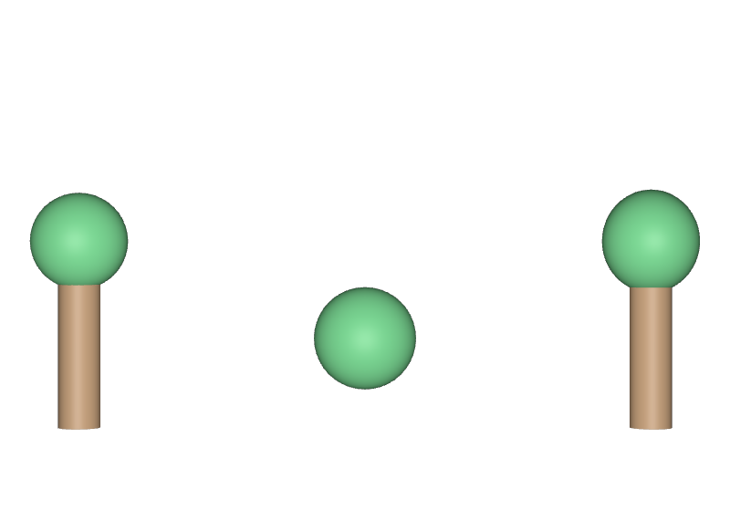

upAxisを書き換えれば向きが直ると思う
StageのupAxisを"Z"へ変えても、既に置いてある他のアセットの向きが変わるだけで、食い違いは解消しません。回すべきは、向きが違うアセットのほうです。
STEP 55 · STAGE METADATA
どの軸が「上」なのかを、Stageに記録します
今日これだけ
公式情報に基づく説明
upAxisは、そのLayerで「上」とみなす軸を示すLayer Metadataです。指定できるのは"Y"か"Z"のどちらかで、書かなかった場合の既定値は"Y"です。metersPerUnitと同じく、これは宣言にすぎません。上方向が違うアセットを読み込んでも、OpenUSDが自動で回転させることはありません。
USDA
#usda 1.0
(
defaultPrim = "World"
metersPerUnit = 1
upAxis = "Y"
)
def Xform "World"
{
def Xform "BuiltUpY"
{
def Cylinder "Trunk"
{
double height = 1.5
double radius = 0.18
uniform token axis = "Y"
}
def Sphere "Crown"
{
double radius = 0.42
double3 xformOp:translate = (0, 0.75, 0)
uniform token[] xformOpOrder = ["xformOp:translate"]
}
double3 xformOp:translate = (-2.3, 0, 0)
uniform token[] xformOpOrder = ["xformOp:translate"]
}
}このStageはupAxis = "Y"です。BuiltUpYはCylinderのaxisを"Y"にし、球も(0, 0.75, 0)すなわちY方向へ持ち上げているので、Stageの約束どおり縦に立ちます。同じファイルには、これをZ方向に作ったBuiltUpZと、それを補正したBuiltUpZFixedも入っています。
結果

BuiltUpY）はY方向に作ったので立っています。中央（BuiltUpZ）はZ方向に作ったため、カメラのほうを向いて倒れ、幹が球の後ろに隠れて球しか見えません。右（BuiltUpZFixed）は同じZ方向の柱にrotateX = -90を掛けて補正したものです。examples/lesson-20b/up-axis.usda / Apple USD Tools 0.25.2 のusdrecord（Hydra Storm・Metal）/ macOS 26.5.2・Apple M4直し方
def Xform "BuiltUpZFixed"
{
double3 xformOp:translate = (2.3, 0, 0)
float xformOp:rotateX = -90
uniform token[] xformOpOrder = ["xformOp:translate", "xformOp:rotateX"]
}Z-upのアセットをY-upのStageへ入れるときは、X軸まわりに-90度回します。こうすると、もとの+Z方向が+Y方向を向きます。逆にY-upのアセットをZ-upのStageへ入れるときは+90度です。符号を取り違えると上下がひっくり返るので、必ず描画して確かめてください。
Diagram
Python
from pxr import Usd, UsdGeom
stage = Usd.Stage.CreateNew("scene.usda")
UsdGeom.SetStageUpAxis(stage, UsdGeom.Tokens.z)
print(UsdGeom.GetStageUpAxis(stage)) # Z
UsdGeom.SetStageUpAxis(stage, UsdGeom.Tokens.y)
print(UsdGeom.GetStageUpAxis(stage)) # Y
stage.Save()UsdGeom.Tokens.yとUsdGeom.Tokens.zは、USDAに書く"Y"と"Z"に対応する定数です。小文字のyで参照して、返ってくる値は大文字のYである点に注意してください。
USDA → Python mapping
USDA
upAxis = "Y"↓Python
UsdGeom.SetStageUpAxis(stage, UsdGeom.Tokens.y)USDA
（値の確認）↓Python
UsdGeom.GetStageUpAxis(stage)USDA
float xformOp:rotateX = -90↓Python
UsdGeom.Xformable(prim).AddRotateXOp().Set(-90)Beginner notes
よくある間違い
StageのupAxisを"Z"へ変えても、既に置いてある他のアセットの向きが変わるだけで、食い違いは解消しません。回すべきは、向きが違うアセットのほうです。
YとZの入れ替えはX軸まわりの回転です。Y軸やZ軸まわりに回しても上下は変わりません。
+90と-90では上下が逆になります。描画して確認するのが確実です。
形の伸びる方向はPrimごとのaxis、Stageの上方向はupAxisです。
Glossary
"Y"または"Z"。"Z"。Official references
確認日: